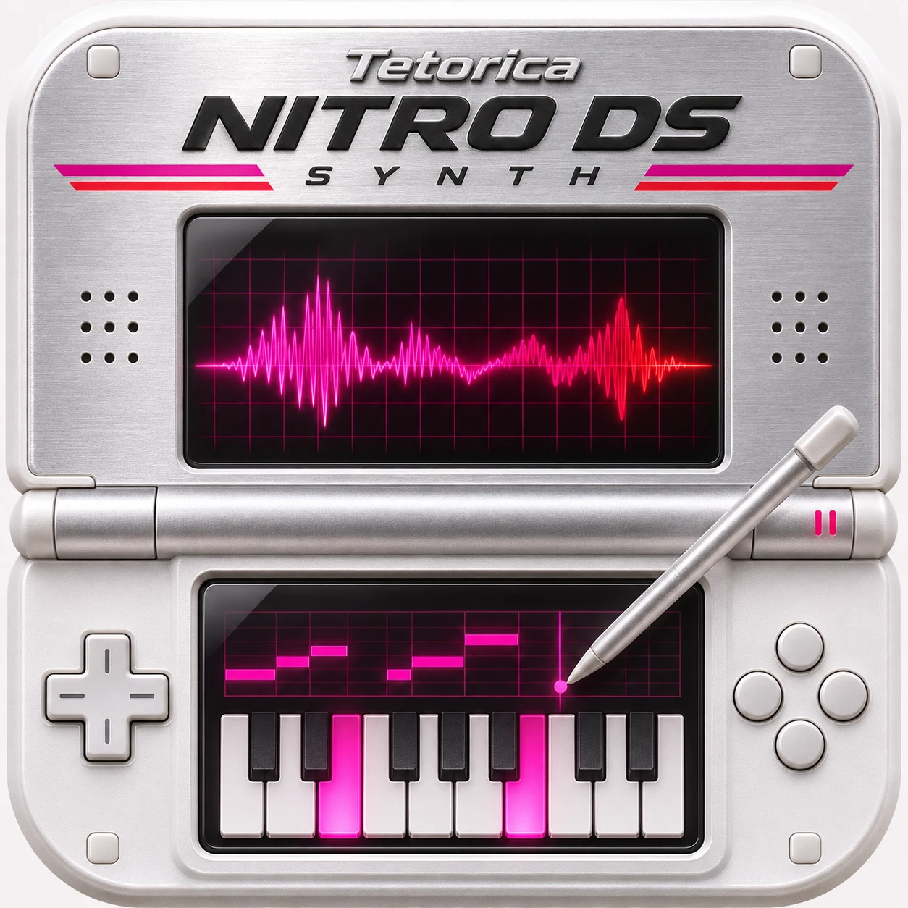

Tetorica Nitro DS Synth
Nintendo DS sample and PSG sound
Synth · Auto
- Voice
- Format
- Volume
- Pan
- Sample rate
Monitoring Synth
Synth instrument
?
All 16 channels play PCM8, PCM16 and IMA-ADPCM. Physical CH9–CH14 also generate pulse waveforms and CH15–CH16 generate noise. Code uses CH1–CH16 for hardware channels 0–15.
Auto allocates compatible channels. Sample, mode and loop changes apply on the next note. Volume, divider, pan, pulse duty and rate controls apply while you hold a key. The keyboard smooths release in software.
Choose a channel while a 2SF plays to follow it. Pause to play that channel on the keyboard. Choose Auto to play your own instrument.
PCM16 waveform
The format, tuning and range apply on the next note.
Sound Capture
Records the Synth mixer before Master. Rate also changes the unit’s channel timer.
Synth channels
Console
About 2SF playback
Use folder import to keep relative paths to shared .2sflib data. Save song to Files keeps the selected song and its libraries in the Cassette. Playback uses the song’s length and fade tags, with a three-minute preview when length is missing.
The SkyEmu preview plays ROM-boot sets at standard timing. Legacy save-state sets and driver timing overrides report an error.